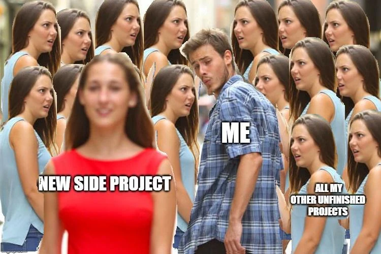
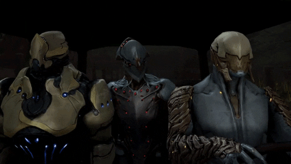
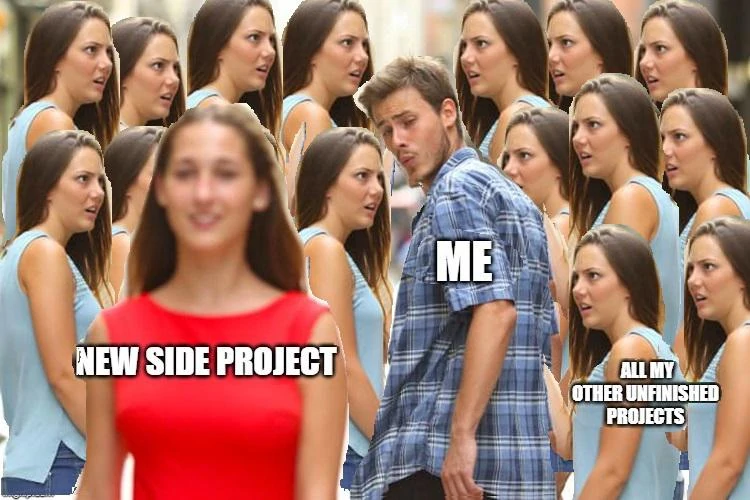
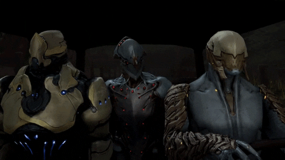

Nazywam się Dawid Jonczak jestem absolwentem Collegium Da Vinci na kierunku Informatyka ze specjalizacją "Projektowanie gier komputerowych", gdzie w grupie 3 osobowej wykonaliśmy pracę "Zaprojektowanie i wykonanie gry kooperacyjnej typu "top-down shooter",
w projekcie byłem odpowiedzialny za programowanie, projektowanie poziomów oraz gry. W tym momencie pracuje w EHS VR jako Unity VR Developer, gdzie tworzę aplikacje/gry szkoleniowe w VR o tematyce BHP. Pracuje tam od lutego 2020 i wykonałem już 8 aplikacji/gier(przejdź niżej, by dowiedzieć się więcej).
W wolnym czasie skupiam się na rozwinięciu swoich umiejętności związanych z C#, Unity oraz Pixel Art, pracując nad hobbistycznymi projektami(w tym momencie pracuje nad Dungeon).
Pracuje tworząc aplikacje/gry szkoleniowe w VR o tematyce BHP. Celem kursów jest naucznie właściwych nawyków w sytuacjach np: pożaru w bloku, pomocy osobie poparzonej, nauczenie korzystania z AED oraz jak wygląda przebieg skoku do skokochronu.
Głównymi platformami na które tworze jest Oculus Quest oraz Oculus Quest 2, wszystkie interakcje w grze dokonywane są dzięki technologii hand tracking. Nad projektami pracuje glównie sam, podczas prac jestem odpowiedzialny za:
Warstwa wizualna: oświetlanie scen, robienie shaderów, particle effect, dobieranie modeli z Unity Asset Stora, współpracowanie z Grafikiem 3D
Warstwa dźwiękowa: dobieranie muzyki, efektów dźwiękowych, przycinanie oraz przerabianie ich
Level design (projektowanie sceny oraz ustawienie ich na niej), projektowanie mechanik pomiędzy graczem, a światem gry/aplikacji
Programowanie mechanik rozgrywki
Optymalizacja aplikacji/gier
W Unity korzystam z silnika animacji DOTween do poruszania, obracania oraz wszelakich "animacji" obiektów, ObiRopa silnik bazujący na particle systemie, służącym do symulowania sznurów), który wykorzystuje do robienia węży do hydrantów, gaśnic oraz różnych lin.
Ostatnio używałem też Wit.AI do interakcji głosowej pomiędzy graczem, a NPC lub krótkofalówki.
Pierwszy mój projekty w Unity, tworzony w czterosobowym zespole. Głównym kierunkiem dla artystycznym był Morderczy Królik z "Monty Python i Święty Graal". Gra jest mieszanką wielu gatunków gier.
Projekt został stworzony na zajęcia z grafiki 2D, gdzie głównym motywem było meksykańskie święto Día de Muertos. W grze znajdują się dwa tryby: Histori oraz Areny.

 
